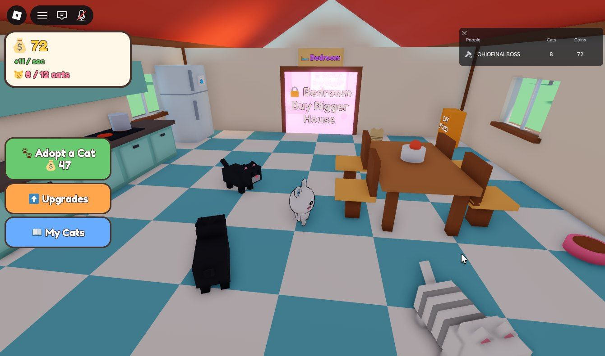

Programming
Writing logic, solving problems and building small programs in school and personal projects.
PythonC++pandasNumPyJupyter
Computer Engineering student who builds games, apps and machine-learning models.
Year 2 at Singapore Polytechnic. I write Python and C++, analyse data with KNIME, Power BI and Excel, and use AI tools to take ideas from a sketch to something people can actually use.
I'm a second-year Computer Engineering student looking for an internship where I can work on real software, data or product problems. In school I've worked with Python and C++, and with data tools like KNIME, Power BI and Excel to clean data, find patterns and present them clearly.
Outside class I build games and apps. I use AI as a coding partner to move faster, then test, debug and adjust the design until it plays the way I want. Recent projects include a machine-learning model that predicts HDB resale prices and a cat-collecting tycoon game on Roblox.
Writing logic, solving problems and building small programs in school and personal projects.
Cleaning and transforming data, training prediction models and turning numbers into charts and dashboards.
Designing game systems and app features, and using AI tools to prototype and iterate quickly.

An idle tycoon game where players adopt cats, earn coins from them every second, and spend those coins on upgrades and a bigger house to fit more cats.
I designed the game loop, the in-game shop and menus, and the house layout, and built it in Roblox Studio with AI helping me write and debug the scripts.
| Set | R² | MAE | RMSE |
|---|---|---|---|
| Train | 0.867 | $53,124 | $69,482 |
| Validation | 0.867 | $53,069 | $69,829 |
| Test | 0.867 | $52,940 | $69,444 |
A model that estimates the resale price of a Singapore HDB flat from its town, flat type and model, floor area, storey, remaining lease and year of sale. I trained it on over 234,000 real resale transactions.
I built the full data pipeline: parsing lease and storey text into numbers, splitting before encoding and scaling to avoid data leakage, then comparing a linear baseline against a tuned Random Forest.
Sketch the core loop or feature and what the user should be able to do.
Use AI tools to draft code quickly and get a first version running.
Playtest, find what breaks or feels off, and fix it.
Tune the numbers, clean up the UI and add the next feature.
I'm available for internships in software, data or game development. I'd be glad to talk.